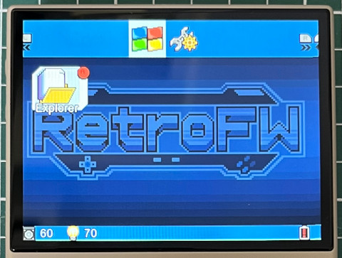
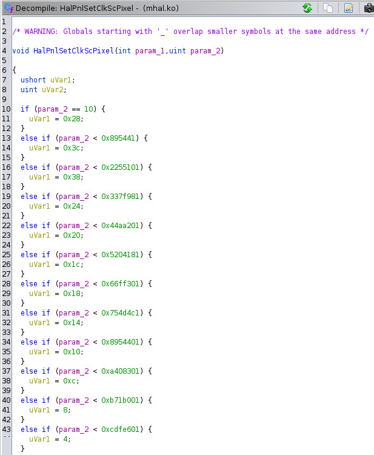
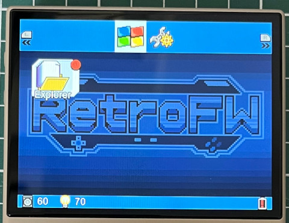

Steward
分享是一種喜悅、更是一種幸福
掌機 - Miyoo Mini Plus - 解決LCD Pixel Clock問題
由於司徒編譯的Kernel始終無法產生/proc/mi_modules/mi_panel/mi_panel0，因此，屏始終無法被正確初始化，導致顯示有問題，如下圖：

P.S. 最左邊的顯示有一部份跑到最右邊，然後最下方的顯示會有一條線一直閃爍
於是司徒開始逆向看一下mi_panel.ko驅動，發現都是透過mhal.ko驅動做設定，因此，司徒再度往mhal.ko驅動找尋東西，發現有一個副程式似乎跟Pixel Clock有關係

這個位址可以透過kallsym取得
# cat /proc/kallsyms | grep HalPnlSetClkScPixel bf82cc29 t HalPnlSetClkScPixel [mhal]
經由司徒的測試，發現如下的設定可以讓顯示變成正常
#include <linux/device.h>
#include <linux/init.h>
#include <linux/module.h>
typedef void (*_HalPnlSetClkScPixel)(int, int);
static _HalPnlSetClkScPixel HalPnlSetClkScPixel = 0xbf82cc29;
int ldd_init(void)
{
HalPnlSetClkScPixel(1, 0x44aa200);
return 0;
}
void ldd_exit(void)
{
}
module_init(ldd_init);
module_exit(ldd_exit);
MODULE_LICENSE("GPL");
MODULE_AUTHOR("Steward Fu");
MODULE_DESCRIPTION("Linux Driver");
修正後，顯示終於變成正常
